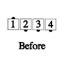
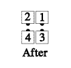
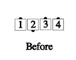
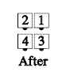

From a 3-and-1 line: The dancers in the mini-wave do a Recycle while the couple does a Wheel And Deal. If the ends of the line are facing opposite directions, this will end in couples facing. If the ends are both facing the same direction, the right end must pass in front, to end in tandem couples.


Timing: 4
© Copyright 1982, 1986-1988, 1995, 2001-2015. Bill Davis, John Sybalsky, and CALLERLAB Inc., The International Association of Square Dance Callers. Permission to reprint, republish, and create derivative works without royalty is hereby granted, provided this notice appears. Publication on the Internet of derivative works without royalty is hereby granted provided this notice appears. Permission to quote parts or all of this document without royalty is hereby granted, provided this notice is included. Information contained herein shall not be changed nor revised in any derivation or publication.